Recursive Descendant Parser
Syntax Analysis
Ahmad Yoosofan
Compiler course
University of Kashan
Special State Diagram for Addition
- 2
- 2+3
- 86+54+876+432+32
Grammar
- E → a
- E → a + E
- E → a + E | a

Which edge must we choose from node 0?
Node 1
Node 3
Left Factoring
- E → a + E
- E → a
- E → a B
- B → + E
- B → λ
Parser Code for Add
E
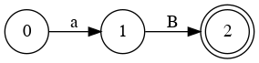B
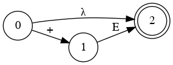1 def E(lex1): 2 t = lex1.getToken() 3 if t.type == 'a': 4 print('a B\t a: ', t.value, end=',') 5 print('\tB: ', lex1.s[lex1.end:]) 6 return B(lex1) 7 print('Synatx Error: number expected') 8 print('Reminder: ',lex1.s[lex1.begin:]) 9 return False 10 11 def B(lex1): 12 t = lex1.getToken() 13 if t.type == '+': 14 print('+E,\tE:', lex1.s[lex1.end:] ) 15 return E(lex1) 16 elif t.type == 'EOF': return True 17 print('Error a a:', s[0]) 18 return False 19 20 def run(s): 21 lex1 = lexical_number_plus.lexical(s); 22 print(E(lex1))
python3 a.py 12.1 + 35.45 + 2
a B a: 12.1, B: +35.45+2
+E, E: 35.45+2
a B a: 35.45, B: +2
+E, E: 2
a B a: 2.0, B:
Truepython3 a.py 12.1 + + 2
12.1 + + 2
a B a: 12.1, B: ++2
+E, E: +2
Synatx Error: number expected
Reminder: +2
FalseParse Tree
1 def E(lex1): 2 t = lex1.getToken() 3 if t.type == 'a': 4 print('a B\t a: ', t.value, end=',') 5 print('\tB: ', lex1.s[lex1.end:]) 6 return B(lex1) 7 print('Synatx Error: number expected') 8 print('Reminder: ',lex1.s[lex1.begin:]) 9 return False 10 11 def B(lex1): 12 t = lex1.getToken() 13 if t.type == '+': 14 print('+E,\tE:', lex1.s[lex1.end:] ) 15 return E(lex1) 16 elif t.type == 'EOF': return True 17 print('Error a a:', s[0]) 18 return False 19 20 def run(s): 21 lex1 = lexical_number_plus.lexical(s); 22 print(E(lex1))
python3 a.py 12.1 + 35.45 + 2
a B a: 12.1, B: +35.45+2
+E, E: 35.45+2
a B a: 35.45, B: +2
+E, E: 2
a B a: 2.0, B:
True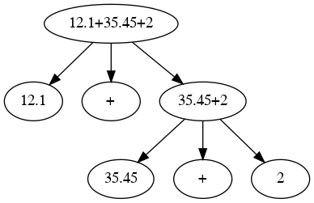
- E[12.1+35.45+2] ⇒
- a[12.1] + E[35.45+2] ⇒
- a[12.1] + a[35.45] + E[2] ⇒
- a[12.1] + a[35.45] + a[2] ⇒
- Left Most Derivation
Doing Addition
1 def E(lex1): 2 t = lex1.getToken() 3 if t.type == 'a': 4 print('a B\t a: ', t.value, end=',') 5 print('\tB: ', lex1.s[lex1.end:]) 6 return B(lex1) 7 print('Synatx Error: number expected') 8 print('Reminder: ',lex1.s[lex1.begin:]) 9 return False 10 11 def B(lex1): 12 t = lex1.getToken() 13 if t.type == '+': 14 print('+E,\tE:', lex1.s[lex1.end:] ) 15 return E(lex1) 16 elif t.type == 'EOF': return True 17 print('Error a a:', s[0]) 18 return False 19 20 def run(s): 21 lex1 = lexical_number_plus.lexical(s); 22 print(E(lex1))
1 def E(lex1): 2 t = lex1.getToken() 3 if t.type == 'a': 4 print('a B\t a: ', t.value, end=',') 5 print('\tB: ', lex1.s[lex1.end:]) 6 res = B(lex1) 7 return res[0], t.value + res[1] 8 print('Synatx Error: number expected') 9 print('Reminder: ',lex1.s[lex1.begin:]) 10 return False, 0 11 12 def B(lex1): 13 t = lex1.getToken() 14 if t.type == '+': 15 print('+E,\tE:', lex1.s[lex1.end:] ) 16 return E(lex1) 17 elif t.type == 'EOF': 18 return True, 0 19 print('Error a a:', s[0]) 20 return False, 0
python3 a.py 12.1 + 35.45 + 2 a B a: 12.1, B: +35.45+2 +E, E: 35.45+2 a B a: 35.45, B: +2 +E, E: 2 a B a: 2.0, B: (True, 49.550000000000004)
python3 a.py 2 + a B a: 2.0, B: + +E, E: Synatx Error: number expected Reminder: (False, 2.0)
Simplify Diagram
E
B
Combine them
 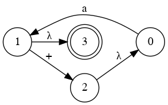
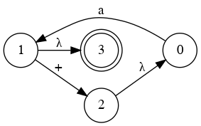E

Parser Code for add Nonrecursive
E
1 def E(lex1): 2 while True: 3 t = lex1.getToken() 4 if t.type == 'a': 5 print('a: ', t.value, end=',') 6 print('\t: ', lex1.s[lex1.end:]) 7 else: 8 print('Synatx Error: number expected') 9 print('\t', lex1.s[lex1.begin:]) 10 break 11 t = lex1.getToken() 12 if t.type != '+': 13 if t.type != 'EOF': 14 print('End of input expected') 15 break 16 if t.type != 'EOF': return False 17 return True 18 19 def run(s): 20 lex1 = lexical_number_plus.lexical(s); 21 print(E(lex1))
input: 16+34+0.30
output:
a: 16.0, : +34+0.30
a: 34.0, : +0.30
a: 0.3, :
Trueinput: 23+ + 34
output:
a: 23.0, : ++34
Synatx Error: number expected
+34
FalseCalculator Code for add Nonrecursive
E
1 def E(lex1): 2 x = 0.0; state = 0; validity = True; 3 while True: 4 if state == 0: 5 t = lex1.getToken() 6 if t.type == 'a': 7 print('a: ', t.value, end=',') 8 print('\t: ', lex1.s[lex1.end:]) 9 state = 1; x += t.value; 10 else: 11 print('Synatx Error: number expected') 12 print('\t', lex1.s[lex1.begin:]); validity = False; break 13 elif state == 1: 14 t = lex1.getToken() 15 if t.type == '+': state = 0 16 elif t.type == 'EOF': state = 2 17 else: print('End of input expected'); validity = False; break; 18 elif state == 2: validity = True; break 19 return validity, x
input: 16+34+0.30 output: a: 16.0, : +34+0.30 a: 34.0, : +0.30 a: 0.3, : (True, 50.3)
input: 23+ + 34 output: a: 23.0, : ++34 Synatx Error: number expected +34 (False, 23.0)
Classes of Languages
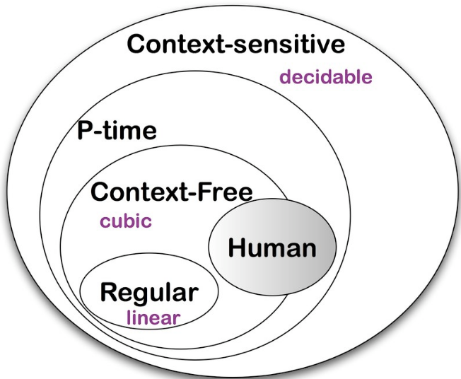Parse for + * ( ) no priority
Consider the follwing sentences of a langauge:
Write down the Grammar
- 3
- 9 +3
- 9 * 3
- (9 * 3)
- (9 + 3)
- (9 * 4) + 5
- 9 * (4 + 5)
- (9 * (4 + 5)) * 3
- 9 * ((4 + 5) * 3)
- 9 * ((4 + 5) + 3)
- (9 + (4 + 5)) * 3
- S → A + A
- S → A * A
- S → A
- A → (S)
- A → a
 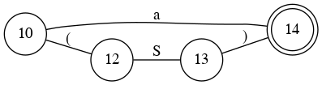
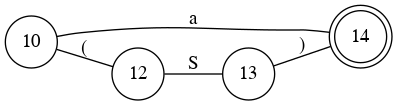Left Factoring
- S → A + A
- S → A * A
- S → A
- A → (S)
- A → a
- S → A B
- B → + A | * A | λ
- A → ( S ) | a
- S

- B

- A

Simplify Diagram
- S
- B
- A
- Combine S and B
Remove Some Recursion
- S


- A
Parser Code
- S
- A
1 def S(lex1): 2 while True: 3 if A(lex1) == False: return False 4 if lex1.ct.type != '+' and lex1.ct.type != '*': 5 break 6 print(lex1.ct.type, ':', lex1.s[lex1.end:]) 7 lex1.getToken() 8 if lex1.ct.type == 'EOF' or lex1.ct.type == ')': 9 return True 10 return False 11 def A(lex1): 12 if lex1.ct.type == 'a': 13 print('a: ', lex1.ct.value, end=',') 14 print('\t: ', lex1.s[lex1.end:]) 15 lex1.getToken() 16 elif lex1.ct.type == '(': 17 print('(\t: ', lex1.s[lex1.end:]) 18 lex1.getToken() 19 if S(lex1) == False: return False 20 if lex1.ct.type != ')' : 21 print('Synatx Error: ) expected') 22 print(lex1.ct.type, '\t', lex1.s[lex1.begin:]) 23 return False 24 else: print(')'); lex1.getToken() 25 else: 26 print(' a or ( expected:: ', lex1.ct.type) 27 return False; 28 return True 29 def run(s): 30 lex1 = lexical_number_plus_mul_par.lexical(s); 31 lex1.getToken() 32 if S(lex1) == True:
1 import sys, lexical_number_plus_mul_par 2 def S(lex1): 3 while True: 4 if A(lex1) == False: return False 5 if lex1.ct.type != '+' and lex1.ct.type != '*': 6 break 7 print(lex1.ct.type, ':', lex1.s[lex1.end:]) 8 lex1.getToken() 9 if lex1.ct.type == 'EOF' or lex1.ct.type == ')': 10 return True 11 return False 12 def A(lex1): 13 if lex1.ct.type == 'a': 14 print('a: ', lex1.ct.value, end=',') 15 print('\t: ', lex1.s[lex1.end:]) 16 lex1.getToken() 17 elif lex1.ct.type == '(': 18 print('(\t: ', lex1.s[lex1.end:]) 19 lex1.getToken() 20 if S(lex1) == False: return False 21 if lex1.ct.type != ')' : 22 print('Synatx Error: ) expected')
21 print(lex1.ct.type, '\t', lex1.s[lex1.begin:]) 22 return False 23 else: print(')'); lex1.getToken() 24 else: 25 print(' a or ( expected:: ', lex1.ct.type) 26 return False; 27 return True 28 def run(s): 29 lex1 = lexical_number_plus_mul_par.lexical(s); 30 lex1.getToken() 31 if S(lex1) == True: 32 if lex1.ct.type == 'EOF': 33 print(True) 34 else: 35 print('Syntax Error: extra characters') 36 print(lex1.s[lex1.begin:]) 37 else: 38 print('Syntax Error at') 39 print(lex1.s[lex1.begin:]) 40 if __name__ == "__main__": 41 if len(sys.argv) < 2: 42 print("python3 a.py '12.1 + (35.45 * 2)'") 43 raise SystemExit(f"Usage: {argvs[0]} input expression") 44 s = ''.join(sys.argv[1:]) 45 run(s)
Lexical
2 class tokenCls: 3 def __init__(self, type1='EOF', 4 v1='', l1=0, b1=0, e1=0): 5 self.type = type1 6 self.begin = b1 7 self.end = e1 8 self.value = v1 9 self.lineno = l1 10 def __str__(self): 11 return '[type: '+ str(self.type) + \ 12 ',\tvalue: ' + str(self.value) + \ 13 '\tline: ' + str(self.lineno) + \ 14 '\tbegin: ' + str(self.begin) + \ 15 '\tend: ' + str(self.end) + ']' 16 class lexical: 17 def __init__(self, s): 18 self.s = s 19 self.begin = 0 20 self.end = 0 21 self.lineno = 0 22 self.length = len(self.s) 23 self.ct = tokenCls(b1=self.begin, 24 e1=self.end) 25 def getToken(self): 26 self.ct = tokenCls(b1=self.begin, 27 e1=self.end) 28 self.begin = self.end 29 while self.end < self.length: 30 a = re.match('[ \t]+', self.s[self.end:]) 31 if a is not None: 32 self.end = self.begin = self.end + a.end() 33 if self.end >= self.length:
33 break 34 35 a = re.match('\d+(\.\d+)?', 36 self.s[self.end:]) 37 if a is None: 38 self.end += 1 39 operators1 = ['+', '-', '*', '/', '(', ')'] 40 if self.s[self.begin:self.end] in operators1: 41 self.ct.type = self.s[self.begin:self.end] 42 break 43 else: 44 print('Lexical error: ', self.lineno, end=' : ') 45 print(self.begin, ':', self.end, end=' , ') 46 print('Unknown character:', self.s[self.begin:self.end]) 47 self.begin += 1 48 else: 49 self.ct.type = 'a' 50 self.ct.value = float(a.group()) 51 self.end += a.end() 52 break 53 self.ct.begin = self.begin 54 self.ct.end = self.end 55 self.ct.lineno = self.lineno 56 return self.ct 57 if __name__ == '__main__': 58 #s = input('Enter ') # 12+35+2 59 s = '12+35+2 ' 60 s = ' 12 + 35 + 2 ' 61 s = ' 12 + 35 --- 2 ' 62 # ~ s = '1.0.' s = '1.0=23.2+4' 63 s = '12+35+2 ' 64 lex1 = lexical(s);
Error Recovery (panic mode)
A Simple Calculator (, ), +, *
- 34
- 34 + 2
- 34 + 45 + 98
- 34 + 45+98 * 4 * 554
- (34 * 2) + 3
- 43 * (54+3)
- 2 + (34)
- (34+3) * 2
- 34+3 * 2 * ((4))
Grammar 1
- S -> S + S
- S -> S * S
- S -> a
- S -> (S)
Wrong Grammar (Why?)
Grammar 2
- E -> T + E | T
- T -> F * T | F
- F -> (E) | a
Grammar 3
- E -> E + T | T
- T -> T * F | F
- F -> (E) | a
Left Recursion
- E -> T L
- L -> + T L | λ
- T -> F M
- M -> * F M | λ
- F -> (E) | a
State Diagram(II)
E -> T L

L -> + T L | λ

T -> F M
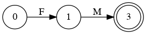M -> * F M | λ
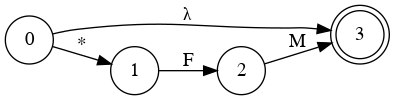F -> (E) | a

- E -> T L
- L -> + E | λ
- T -> F M
- M -> * T | λ
- F -> (E) | a
Simplify Diagram(II) - Combine E, L
E -> T L
L -> + E | λ


Simplify Diagram(III) - Combine T, M
T -> F M
M -> * T | λ
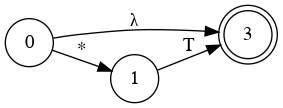 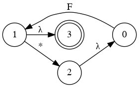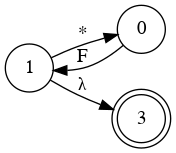
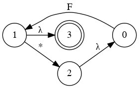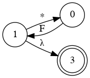Diagrams of the Second Calculator
E
T
F
Can E and T be combined?
E
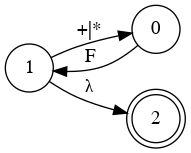- 4 + 3 * 2
- ( 4 + 3 ) * 2
- 4 + ( 3 * 2 )
- 3 * 2 + 4
- 3 * ( 2 + 4 )
- ( 3 * 2 ) + 4
State Diagram
- E -> T + E | T
- T -> F * T | F

- F -> (E) | a
Simplify Diagram(IV) - Fewer steps
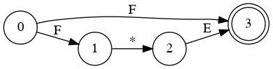Parser Code for Add and Multiply
E
T
F
1 def S(lex1): 2 lex1.getToken() 3 if E(lex1) == True: 4 if lex1.ct.type == 'EOF': print(True) 5 else: 6 print('Syntax Error: extra characters at END: ') 7 print(lex1.s[lex1.begin:]) 8 else: print('Syntax Error at', lex1.s[lex1.begin:]) 9 def E(lex1): 10 while True: 11 if T(lex1) == False: return False 12 if lex1.ct.type != '+': break 13 lex1.getToken() 14 return True 15 def T(lex1): 16 while True: 17 if F(lex1) == False: return False 18 if lex1.ct.type != '*': break 19 lex1.getToken() 20 return True; 21 def F(lex1): 22 if lex1.ct.type == 'a': 23 lex1.getToken() 24 elif lex1.ct.type == '(': 25 lex1.getToken() 26 if E(lex1) == False: return False 27 if lex1.ct.type != ')' : return False 28 lex1.getToken() 29 else: return False 30 return True 31 def run(s): 32 lex1 = lexical_number_plus_mul_par.lexical(s); 33 S(lex1)
Another Language for simple expression + - * / ( )
- 2 + 3 * 4 - 5
- 4 - 5 * 2 / ( 4 - 2 ) + 1
- ( ( 2 * ( 3 - 1) ) / (5 - 3) ) * ( 7 - 8 )
Grammar ?
- E → T + E | T - E | T
- T → F * T | F / T | F
- F → (E) | a
Is there any problem?
- 4 - 3 - 2
- 16 / 4 / 2
It was a wrong grammar
- E → E + T | E - T | T
- T → T * F | T / F | F
- F → (E) | a
Left Most Derivation
- E ⇒ E + T ⇒
- T + T ⇒
- F + T ⇒
- 16 + T ⇒ 16 + T * F ⇒
- 16 + F * F ⇒
- 16 + 3 * F ⇒
- 16 + 3 * 4
Left Recursion Elimination
A → A α | β
 |  |
- A → β A'
- A' → α A' | λ
General Form of Direct Left Recursion Elimination
A → A \(α_1\) | A \(α_2\) | \(...\) | A \(α_m\) | \(β_1\) | \(β_2\) | \(...\) | \(β_n\)
Convert to
- A → \(β_1\) A' | \(β_2\) A' | \(...\) | \(β_n\) A'
- A' → \(α_1\) A' | \(α_2\) A' | \(...\) | \(α_m\) A' | λ
Calculator Grammar
$$\begin{align}A → A α_1 | A α_2 | \dots | A α_m | β_1 | β_2 | \dots | β_n\end{align}$$
Convert to
- A → \(β_1\) A' | \(β_2\) A' | \(...\) | \(β_n\) A'
- A' → \(α_1\) A' | \(α_2\) A' | \(...\) | \(α_m\) A' | λ
- E → E + T | E - T | T
- T → T * F | T / F | F
- F → a | (E)
Convert to
- E → T E'
- E' → + T E' | - T E' | λ
- T → F T'
- T' → * F T' | / F T' | λ
- F → a | (E)
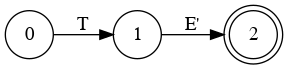


Simplify Diagram(V) - Combine E and E'
E
E'
 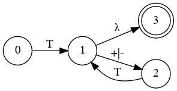
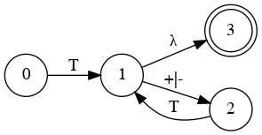
Simplify Diagram(VI) - Combining T and T'
T
T'


Parser Code for Last Calculator
E
T
F
1 def S(lex1): 2 lex1.getToken() 3 if E(lex1) == True: 4 if lex1.ct.type == 'EOF': print(True) 5 else: 6 print('Syntax Error: extra characters at END: ') 7 print(lex1.s[lex1.begin:]) 8 else: print('Syntax Error at', lex1.s[lex1.begin:]) 9 def E(lex1): 10 while True: 11 if T(lex1) == False: return False 12 if lex1.ct.type not in ['+', '-']: break 13 lex1.getToken() 14 return True 15 def T(lex1): 16 while True: 17 if F(lex1) == False: return False 18 if lex1.ct.type not in ['*', '/']: break 19 lex1.getToken() 20 return True; 21 def F(lex1): 22 if lex1.ct.type == 'a': 23 lex1.getToken() 24 elif lex1.ct.type == '(': 25 lex1.getToken() 26 if E(lex1) == False: return False 27 if lex1.ct.type != ')' : return False 28 lex1.getToken() 29 else: return False 30 return True 31 def run(s): 32 lex1 = lexical_number_plus_mul_par.lexical(s); 33 S(lex1)
Parser Tree
9 def E(lex1): 10 while True: 11 print('E: ', lex1.s[lex1.begin:]) 12 if T(lex1) == False: return False 13 if lex1.ct.type not in ['+', '-']: 14 break 15 print('Op: ', lex1.s[lex1.begin:]) 16 lex1.getToken() 17 return True 18 def T(lex1): 19 while True: 20 print('T: ', lex1.s[lex1.begin:]) 21 if F(lex1) == False: return False 22 if lex1.ct.type not in ['*', '/']: 23 break 24 print('Op: ', lex1.s[lex1.begin:]) 25 lex1.getToken() 26 return True; 27 def F(lex1): 28 print('F: ', lex1.s[lex1.begin:]) 29 if lex1.ct.type == 'a': 30 print('Number: ', lex1.ct.value) 31 lex1.getToken() 32 elif lex1.ct.type == '(': 33 lex1.getToken() 34 if E(lex1) == False: return False 35 if lex1.ct.type != ')' : 36 return False 37 lex1.getToken() 38 else: return False 39 return True
1 python3 t.py '1+4*(3-1)' 2 E: 1+4*(3-1) 3 T: 1+4*(3-1) 4 F: 1+4*(3-1) 5 Number: 1.0 6 Op: +4*(3-1) 7 T: 4*(3-1) 8 F: 4*(3-1) 9 Number: 4.0 10 Op: *(3-1) 11 F: (3-1) 12 E: 3-1) 13 T: 3-1) 14 F: 3-1) 15 Number: 3.0 16 Op: -1) 17 T: 1) 18 F: 1) 19 Number: 1.0 20 True

- E → E + T | E - T | T , 2. T → T * F | T / F | F , 3. F → (E) | a

1 python3 t.py '1+4*(3-1)' 2 E: 1+4*(3-1) 3 T: 1+4*(3-1) 4 F: 1+4*(3-1) 5 Number: 1.0 6 Op: +4*(3-1) 7 T: 4*(3-1) 8 F: 4*(3-1) 9 Number: 4.0 10 Op: *(3-1) 11 F: (3-1) 12 E: 3-1) 13 T: 3-1) 14 F: 3-1) 15 Number: 3.0 16 Op: -1) 17 T: 1) 18 F: 1) 19 Number: 1.0 20 True
Calculator
2 def E(s1): 3 [s1, x]=T(s1) 4 while len(s1) > 0 and \ 5 (s1[0] == '+' or s1[0] == '-'): 6 if s1[0]=='+': 7 flag = True 8 else: 9 flag = False; 10 [s1, y] = T(s1[1:]) 11 if flag == True: 12 x += y; 13 else: 14 x -= y 15 return [s1, x] 16 17 def T(s1): 18 [s1, x] = F(s1) 19 while len(s1) > 0 and \ 20 (s1[0] == '*' or s1[0] == '/'): 21 if s1[0] == '*': 22 flag = True; 23 else: 24 flag = False; 25 [s1, y] = F(s1[1:]) 26 if flag == True: 27 x *= y; 28 else: 29 x /= y 30 return [s1, x]
31 def F(s1): 32 if s1[0] == '(': 33 s1 = s1[1:] 34 [s1, x] = E(s1) 35 if len(s1) == 0 or s1[0] != ')': 36 print('Error: ) missing') 37 raise 38 s1 = s1[1:] 39 return [s1, x] 40 else: 41 a = re.match('[0-9]+(\.[0-9]+)?', s1) 42 s1 = s1[a.end():] 43 return [s1, float(a.group())] 44 45 st = input('Enter >> ') #st='12+35-2' 46 while st != "": 47 try: 48 [s1, val] = E(st) 49 print(val) 50 except: 51 print('Error') 52 st = input('Enter >> ') #st='12+35-2'
Calculator(IV)(lexical)
0 import re 1 class error(BaseException): 2 def __init__(self,s): 3 self.s = s; 4 5 class Lexical: 6 def __init__(self, s = '4+5'): 7 self.ct = ['$', 0] # current token 8 self.s = s 9 self.index = 0 10 self.pi = 0 11 print(self.s); 12 13 def getToken(self): 14 res = [] 15 self.pi = self.index; 16 if len(self.s) == self.index: 17 res=['$', 0] 18 elif self.s[self.index] == '*': 19 res=['*', 0] 20 elif self.s[self.index] == '/': 21 res=['/', 0] 22 elif self.s[self.index] == '+': 23 res=['+', 0] 24 elif self.s[self.index] == '-':
25 res=['-', 0] 26 elif self.s[self.index] == '(': 27 res=['(', 0] 28 elif self.s[self.index] == ')': 29 res=[')',0] 30 elif '0' <= self.s[self.index] <= '9': 31 a = re.match('[0-9]+(\.[0-9]+)?', 32 self.s[self.index:]) 33 res = ['n', float(a.group())] 34 self.index += a.end() - 1; 35 else: raise error('lexical error ') 36 self.index += 1 37 self.ct = res # print(self.ct) 38 return res 39 40 def unget(self): 41 self.index = self.pi; 42 43 def E(lex): 44 x = T(lex); 45 while lex.ct[0] in ['+', '-']: 46 p = lex.ct[0]
Calculator(V)
47 lex.getToken() 48 y = T(lex); 49 if p == '+': x += y 50 else: x -= y; 51 return x; 52 53 def T(lex): 54 x = F(lex); 55 while lex.ct[0] in ['*', '/']: 56 p=lex.ct[0] 57 lex.getToken() 58 y = F(lex); 59 if p == '*': x *= y 60 else: x /= y; 61 return x; 62 63 def F(lex): 64 x = 0 65 if lex.ct[0] == 'n': 66 x = lex.ct[1]; 67 elif lex.ct[0] == '(': 68 lex.getToken() 69 x = E(lex);
70 if lex.ct[0] != ')' or lex.ct[0] == '$': 71 raise error(' ) is missing ') 72 else: 73 raise error(' Error in F '); 74 lex.getToken() 75 return x; 76 77 s = input('Enter >> '); 78 while s != '': 79 try: 80 lex = Lexical(s) 81 lex.getToken() 82 print(E(lex)); 83 except error: print(') is missing'); 84 except: print('Syntax Error') 85 s = input('Enter >> ')
Calculator(VI) - lexical
0 #include<iostream> 1 #include<cstdlib> 2 3 enum TokenType{ 4 NUMBER, PLUS, MINUS, MUL, DIV, 5 LPAR, RPAR, END_OF_INPUT 6 }; 7 struct Token 8 {TokenType type; int n; double r;}; 9 10 void error(const std::string msg){ 11 std::cout << msg << std::endl; 12 exit(0); 13 } 14 15 Token t; 16 char buffer[200]; 17 int tindex = 0; 18 19 void E(void); 20 void T(void); 21 void F(void); 22 23 void read(void){ 24 std::cout << "Enter expression" 25 << std::endl; 26 std::cin>>buffer; 27 } 28 29 Token getToken(void){ 30 static int number_of_call = 0;
31 number_of_call ++; 32 if(buffer[tindex] == '(') 33 t.type = LPAR; 34 else if(buffer[tindex] == ')') 35 t.type = RPAR; 36 else if(buffer[tindex] == '+') 37 t.type = PLUS; 38 else if(buffer[tindex] == '-') 39 t.type = MINUS; 40 else if(buffer[tindex] == '*') 41 t.type = MUL; 42 else if(buffer[tindex] == '/') 43 t.type = DIV; 44 else if(buffer[tindex] >= '0' && 45 buffer[tindex]<='9'){ 46 t.type=NUMBER; 47 t.n = 0; 48 for(; buffer[tindex] >= '0' 49 && buffer[tindex] <='9'; tindex++) 50 t.n = t.n * 10 + buffer[tindex] - 48; 51 tindex --; 52 } 53 else if(buffer[tindex] == '\0') 54 t.type = END_OF_INPUT; 55 else 56 error("unknown character"); 57 //std::cout << t.type<<'\t'<<tindex<<'\t' 58 //<<number_of_call<<'\t'<<t.n<<std::endl; 59 tindex++; 60 return t; 61 }
Calculator(VII)
63 void A(void){ 64 t = getToken(); 65 E(); 66 if(t.type != END_OF_INPUT) 67 error("unrecognized token"); 68 else 69 std::cout << "Accept" << std::endl; 70 } 71 72 void E(void){ 73 T(); 74 while(t.type == PLUS || t.type == MINUS){ 75 t = getToken(); 76 T(); 77 } 78 } 79 80 void T(void){ 81 F(); 82 while(t.type == MUL || t.type == DIV ){ 83 t = getToken(); 84 F(); 85 } 86 } 87 88 void F(void){ 89 if(t.type == LPAR){
90 t = getToken(); 91 E(); 92 if(t.type != RPAR) 93 error(" ) is missing"); 94 } 95 else if(t.type==NUMBER) 96 ; 97 else 98 error("Wrong token "); 99 t = getToken(); 100 } 101 102 void tryGetToken(void){ 103 do{ 104 t = getToken(); 105 }while(t.type != END_OF_INPUT);} 106 107 int main(){ 108 read(); /*tryGetToken();*/ 109 A(); 110 return 0; 111 }/*2-(3-2)/(3-(2-1)/(5-2*2))-1+2*/
End